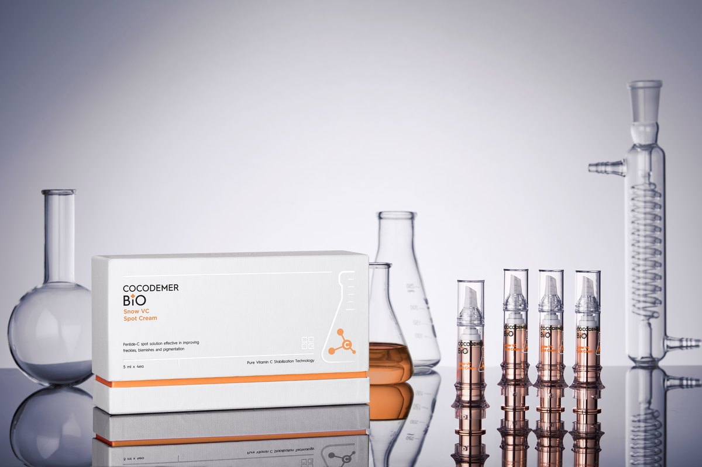

소재에서 출발하는
피부 솔루션
전문 영역에서 다뤄지는 다양한 바이오 소재를 연구하고,
그 소재의 특성을 피부에 적용하는 방법을 설계합니다.COCODEMER의 철학을 공유하지만,
소재에서 출발하는 별도의 접근을 이어갑니다.
COCODEMER가 피부를 먼저 봤다면,
COCODEMER BIO는 소재를 먼저 봅니다.
COCODEMER BIO는 전문 영역에서 접한 다양한 바이오 소재의 가능성을
연구하고 검토하는 과정에서 시작했습니다. 제품부터 정하는 것이 아니라, 소재의 특성과 적용 가능성을 먼저 살피고
그에 맞는 제품과 제형을 고민합니다.
연구·검토해 온 소재 영역
COCODEMER BIO는 펩타이드, 보툴리눔 관련 소재, 엑소좀, PDRN, NMN 등
전문 영역에서 다뤄지는 다양한 바이오 소재를 연구하고 검토해 왔습니다.
- 01PEPTIDES펩타이드
- 02BOTULINUM-RELATED
MATERIALS보툴리눔 관련 소재 - 03EXOSOMES엑소좀
- 04PDRN폴리데옥시리보뉴클레오타이드
- 05NMN니코틴아마이드모노뉴클레오타이드
이 소재들이 모두 하나의 제품에 적용됐다는 의미는 아닙니다.
각 소재의 특성과 제품화 가능성을 검토하며, 적합한 형태와 제형을 찾아갑니다.
※ 위 목록은 COCODEMER BIO의 연구·검토 영역이며, 판매 제품의 성분 목록이 아닙니다.
Snow VC Spot Cream Set의 전성분은 제품 상세 페이지에서 확인할 수 있습니다.
소재를 이해하고, 조건을 설계하고,
제품으로 연결합니다.
소재를 이해합니다.
전문 영역에서 다뤄지는 소재의 특성과 가능성을 먼저 살핍니다.
조건을 설계합니다.
소재가 안정적으로 사용될 수 있는 농도, 조합, 제형 조건을 검토합니다.
제품으로 연결합니다.
소재의 특성에 맞는 형태와 사용 방식을 설계하고 제품으로 구현합니다.
같은 시작점이 아닌,
서로 다른 접근
피부에서 출발합니다.
피부를 보고, 측정하고, 이해한 뒤
사용 순서와 상태에 맞춰 설계합니다.
소재에서 출발합니다.
전문 소재의 특성을 먼저 이해하고, 그 소재를
피부에 적용할 수 있는 형태와 제형을 설계합니다.
이 차이가 두 축을 나누는 핵심입니다.
소재에서 제품으로

Snow VC Spot Cream Set
2023년, COCODEMER BIO의 이름으로 Snow VC Spot Cream Set을 제품화했습니다.
BIO 전체를 대표하는 제품이라기보다, 소재에서 출발하는 접근이 실제 제품으로 이어진 초기 사례입니다.
- Pure Vitamin C 20%
- Pentide-C
- 5 ml × 4
소재 기반 Dermocosmetics로
COCODEMER BIO는 소재에서 출발하는 접근을 바탕으로
다양한 바이오 소재와 Dermocosmetics 영역으로 제품의 범위를 확장해 갑니다.
구체적인 제품과 출시 일정은 확정된 이후 안내합니다.
소재 제안 · 공동 개발
보유 소재 제안, 제품 공동 개발, 사업 협력을 검토 중이라면 문의해 주십시오.